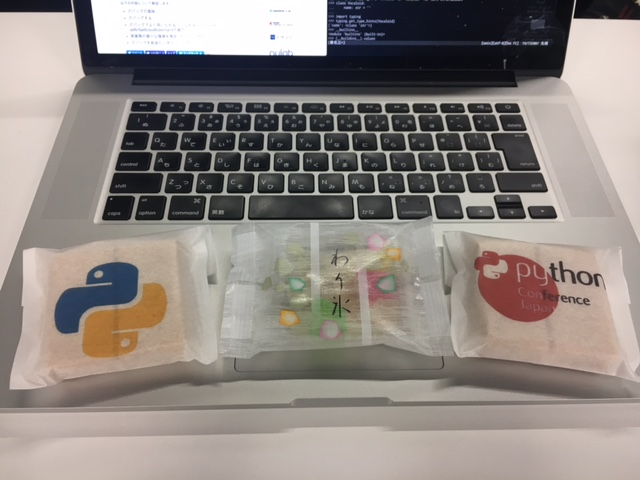
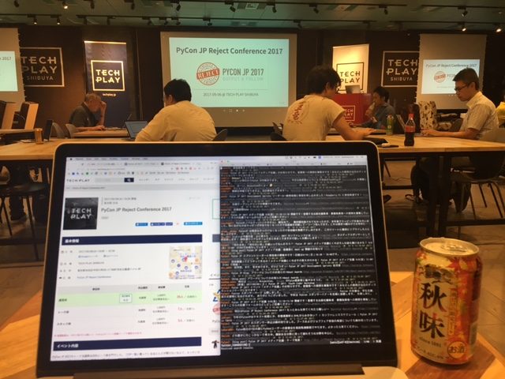
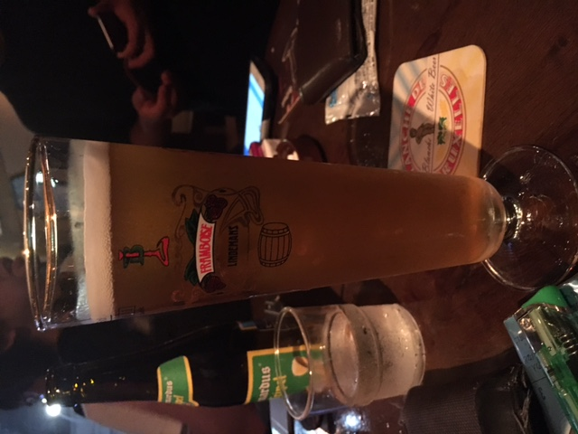

JobChangeして半年が過ぎました
無事、3ヶ月の試用期間が終わり本採用になってました。
今年の4月から 某イベントサイト を運営しているPython企業でPythonとかDjangoを書いてます。Twitterでぼちぼち呟いてたり、お会いしてる方には伝えたりしてましたので今更感がすごいですね。 最初は猛者ばかりの環境に来て、3日で屍になるかと思ってましたがなんとか生きています。
入社に至る経緯
https://twitter.com/kashew_nuts/status/826297725670940672
- ↑こんなつぶやきをしてみる。
- Twitter経由で声をかけられる
- 会社訪問して面接する
- 入社試験受ける
- 内定GET!
その節は皆さんありがとうございました。
転職してどうか
とにかく”働きやすい”会社だなと感じています。個人的に「ないと困る」「あって当たり前」というものから、「あったらいいのにな」と思うようなことまでが普通にあるので、とにかくストレスを感じにくいです。例を挙げると、
- Pythonで仕事ができる
- 選択できる勤務時間
- 時間休の概念
- 週5リモートワーク可
- OSSに貢献するのが普通な文化
- 好きな開発環境・エディタが使える (PyCharm, Vim, Emacs, etc…)
- ソフトウェアのライセンス費がでる
- デュアルディスプレイ
- GitHubが使える
- CI環境がある
- Slackでオンラインコミュニケーション
- 仕事で困ったことがあっても相談できる相手がいる
- スタンディングデスク/フリーアドレス席が使える
- 無料Redbull/ウォーターサーバー/各種ドリンク
- ストレスコントロールができる同僚たち
- 電話に出る必要がない
- 常に学んで良くしていこうという姿勢だけでなく実行していく文化がある
- 服装自由
- 無駄な会議や稟議が必要ない
- etc…
実感できていないところがあるだけでまだある気がしています。
リモートワークについて
転職するにあたり気になってたのがこれです。会社にいるメリット・デメリットと、リモートで仕事できるメリット・デメリットがそれぞれありますが、リモートを選択できる自由があるというがすごく良いです。
リモートワークで感じたメリット
- 台風や雨の日に出社しなくて良い。
- スキマ時間に病院行ける。
- 宅配の荷物を受け取れる。
- 家の雑事を片付けられる。
- 起きたらすぐ仕事できるし、仕事終わったらすぐ寝れる。
- 満員電車に乗らなくて良い (徒歩通勤なのであれですが)
リモートワークで感じたデメリット
- 会社にいれば1日1本飲めるRedbullが飲めない…
- 家にはウォーターサーバーがない…
- 出社や退社するついでにいけたはずの買い物や運動しに移動するのが面倒 (←アカン)
目標とか
せっかくPythonの会社に入ったのでPythonたくさん書いてPyConで発表できるくらいになりたいですね。会社はPythonやらDjangoやら強い人ばかりなので、まずはその辺をしっかり身につけたい。
まとめ
Python楽しいよPython。
おまけ
内定の提示を受けたときのTweetがこちら。
https://twitter.com/kashew_nuts/status/834302571401531394
いつでも転職祝いは受けつけています！ http://amzn.to/2lwqVSJ
PyConJP2017に参加しました #pyconjp

- PyCon JP 2017 - connpass
- PyCon JP 2017 in Tokyo | Sep 7th – Sep 10th
- PyCon JP 2017 - Togetter
- PyConJP - YouTube
4回目のPyCon参加になりました。今回はいくつか目標を立ててました。
- Keynoteを2つとも聞く
- Keynote以外の英語のセッションも聞く
- はじめましての人もお久しぶりの人も話す
- 2次会に行く
- セッションに参加するだけでなく、メディア企画やポスターセッションのようなコンテンツも楽しむ
結論としては全部達成できましたかね(o・ω・o)
contents
RejectConについて
PyConの前夜祭ということで「非公式」で行われました。

話し終わったたびに「何故Rejectされたのか？」と発表者に分析してもらっていたのですが、全体的に「Python成分が薄い」というのが多かったのが印象的でした。 人数が少なめなのが残念でしたが、他にも強力な裏番組が2つあったりしたのとちょっと直前だったせいなのかな…と。
発表内容的にはためになる話も多かったです。年々PyConに応募する内容のレベルも上がってるんだなーと思いました。
After Partry
Day1: Party以降

- お酒の充実度合いがすごかった。ビールサーバー、クラフトビール、日本酒と充実しまくりで堪能してた。
- @y__mattuさん にあった。 @soogieさん に紹介してもらったけど、R界隈のホープらしい。曰く「Rでできないことはパンダスにはないとのこと。」でもPythonはPythonでRとかサスにはできないところがあったり、コミュニティがとても楽しいとのこと。これは良かった。
- @chezouさん さんの御尊顔を拝見した。すごい謙遜されていたけど、普段からやってるからあえて言わないんだろうな感あった。
- @yaegassyさん とか、 @lambdalisueさん とか、 @rokujyouhitomaさん とか人をつないだり、つなげてもらったり、久しぶりの人に挨拶したりしてた。参加するたびにこうゆう機会増えていくの楽しいしおもしろい。
- キャリアの話とか、あのときは実はねみたいな話を聞けたりとかセッションを聞く以外の話をできるのは楽しい。
- 某氏にPEP8 3回読んで自分のコード見てまたPEP8読んでと伝えた
- 裏PyCon楽しかった
感想
- 今回はいろいろと「実は…」みたいな会話をすることが多かったPyConだった。
- それを聞けるようになったり、言えるようになったのは変化だったり成長だったりするんだろうなと思う。
- 「聞いて」「見た」なら「自分で確かめる・行動する」フェースが必要だと感じた。
- 自分の知識不足や発表者の意図を意図通りに受け取れずに誤解・誤読することはあると思う。
- 先人の知恵は活用しつつも、自分で確かめたり行動する必要が「ある」。
- 発表は基準にはなる。一歩先に行ったり、正しく理解するには自分で動くことが必要。
- セッション30分は聞きやすいけど、せっかくのPyConなんだからもっと時間をかけて深いところも聞きたかった。
- ひとつのテーマについて少し深く話そうとしたら軽く10分20分は使うので、せめて中級者以上のセッションは4〜50分くらいほしい。
- 発表者も30分では話しきれないとわかっているのか、発表を通して後日自分で勉強したり情報を探したりすることができるようなキッカケになるような話し方をしてくれる人が多かったのがありがたかった。
参加者Blog
見返すように見つけられたBlogを追記しておきます。
- PyCon JP 2017 1日目 参加ログ #pyconjp — 清水川Web
- PyCon JP 2017 2日目 参加ログ #pyconjp — 清水川Web
- PyCon2017 一日目のれぽーと - Foreverly
- PyCon JP 2017 にさらりと参加してきた #pyconjp - 941::blog
- PyCon JP 2017に参加しました - 前半 #pyconjp - Stimulator
- PyCon JP 2017に参加しました - 後半 #pyconjp - Stimulator
- PyCon JP 2017 Day 1 - 蛇ノ目の記
- PyCon JP 2017 Day 2 - 蛇ノ目の記
- PyCon JP 2017に参加してきました (1日目) #pyconjp - プログラマ行進曲第二章
Pythonもくもく自習室 #2に参加しました #rettypy

目次
自己紹介タイム
各々今日やることを紹介。Django, fibit, PyConの準備, スクレイピング, システムトレード, 本のレビューなどありましたね。
やったこと
PyCharmからJupyterを触ってみる
TerminalからJupyter立ち上げて使ったほうが速かったです。 「これぞ！」っていうPyCharmからJupyterを触る理由が見つかったらまた手をだすかもしれませんが、どうなんでしょう。ショートカットとかぶつかりまくって大変そう。
bottle
チュートリアルを流し読み。Django使うまでもない軽いやつ作るときはこっちのほうがいいかも。
EffectivePython 第3章 クラスと継承
本を読んでたメモです。あしからず。
項目22: 辞書やタプルで記録管理するよりもヘルパークラスを使う
collectionモジュールのnamedtupple型
- namedtuppleの限界 (namedtuppleは多くの場合に有用だが、害の方が多くなることもある)
- namedtuppleクラスでは、デフォルト引数値を指定できない。データに多くのオプションプロパティがあるときにやっかい。 少数とは言えない個数の属性を扱うなら、それ専用のクラスを作るほうがよい選択。
- namedtuppleインスタンスの属性値は、数字の添字とイテレーションを使ってアクセスできる。外部化されたAPIの場合は特に、このような意図しない使い方をされていたために、後に本物のクラスに移行するのが難しくなることがある。namedtuppleインスタンスのすべての用途を制御できていないなら、自分のクラスを定義したほうがよいでしょう。
覚えておくこと
- 値が他の辞書や長いタプルであるような辞書を作るのは止める。
- 完全なクラスの柔軟性が必要となる前は、軽量で変更不能データのコンテナであるnamedtuppleを使う。
- 内部状態辞書が複雑になったら、記録管理コードを複数のヘルパークラスを使うように変更する。
項目23: 単純なインターフェースにはクラスの代わりに関数を使う
覚えておくこと
- Pythonのコンポーネント間の単純なインターフェースは、たいてい、クラスを定義してインスタンス化しないでも、関数で済ませられる。
- Pythonでは関数とメソッドの参照はファーストクラスなので、他の型同様、式中で使うことができる。
- 特殊メソッド __call__ は、クラスのインスタンスが、Pythonの普通の関数として呼び出されることを可能にする。
- 状態を保守するために関数が必要な場合、状態を持つクロージャを定義するかわりに、 __call__ メソッドを提供するクラスを定義することを考える。
成果発表

(発表してる最中の写真取ればよかった。ちょっと写真取るタイミングミスった感がある。)
- タケオカ もくもく会初参加。
- Pythonチュートリアル(オライリー)を読んでいたが、内職してたらそっちに集中してしまいました。
- 次回はものを作りたい。
- @ryoo17 Djangoでアプリを作ってました。書籍管理アプリ。漫画を管理するもの。
- @driller
- 本がでます→ PythonユーザのためのJupyter[実践]入門
- finpyというものを運営してます。次回未定。PyConでRejectされたものをやるかも？
- ホロビューズ
- ツツミ 朝はシステムトレードをPythonでやろうとして、データを取ってくるところまで実施。
- カワグチ(@_skwbc)
- ニューラルネットとその実装をTensorFlowでやろうとした。チュートリアルやってました。
- Understanding LSTM Networks – colah’s blog がわかりやすかった。
- @marugari 購買分析のLibraryの改造をしてた。計算のズレのあたりがついたので、後で見直す。
- タケノ 画像処理コトハジメ。
- どのFWを触ろうかという比較をしたり、データセットを準備したところまで実施した。
- chainer/comparison.rst に各FWごとの比較があるのでそちらが参考になった。
- オオヒラ 前処理の手続きを楽にしようとしてた。統計よりの作業。
- イトウ@pir0w PyQやってました。中級をスタートしてた。
- 正規表現は慣れが必要かなと思った。もう少しでDjangoにいけそう。
- 苦労したところ。for文でenumrateが慣れが必要かなと。←イテレータ系が独特かなと思うけど、覚えると楽。
- ITO Shogo
- 自社サービスの遅いところ、検索部分のカイゼン。キャッシュに入れるデータが多すぎて取り出す時に時間かかってた。キャッシュに入れたほうが遅いという…
- ISCONが好きで、それを模した社内コンテストをするための準備をしてた。
- @mocamocaland
- いちばんやさしいPythonの教本 を読んだり、Blogを書いてました。
- 自分がPython始めるころにあったら良かったなと思った。
- @kashew_nuts 上記参照
- mdrms 電気をつけたまま寝落ちすることが多いので、値落ちの状況を可視化したい→fitbitの新把握データからとった。
- @shinyorke PyConの準備してました。
- Airflow: Batch処理、前処理などを毎日動かすために使用。
- クローラーが走った後に次の処理に行かない。適当なpython実行ファイルで試したら動いたが、クローリングにScrapyを使用しており、そちらで試すとダメらしい。
その他
お昼は魚のお店に行ったので釣りの話を聞いていたり、キャリアの話をしていたりしてました。もくもくタイム間にパッケージングの話をしたり、おいしいお菓子をいただいたりしてましたね。
次回の参加はこちらから→ Pythonもくもく自習室 #3 @Rettyオフィス - connpass

お昼に食べた定食はボリューム満点でした。うまかった。